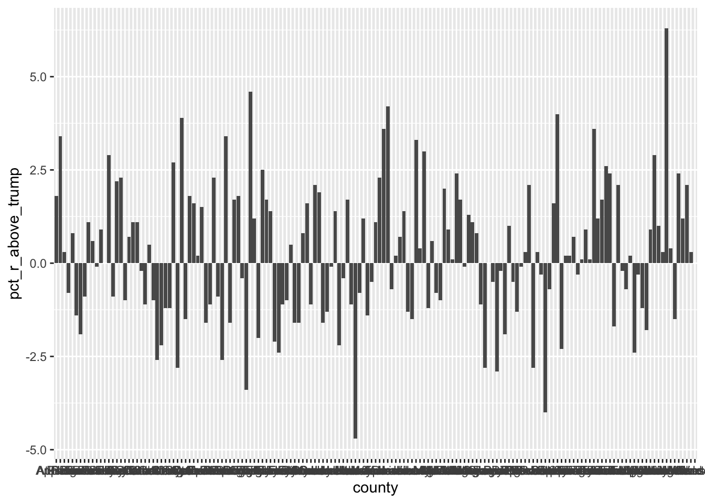
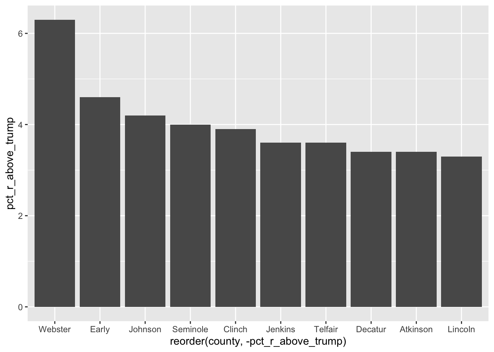
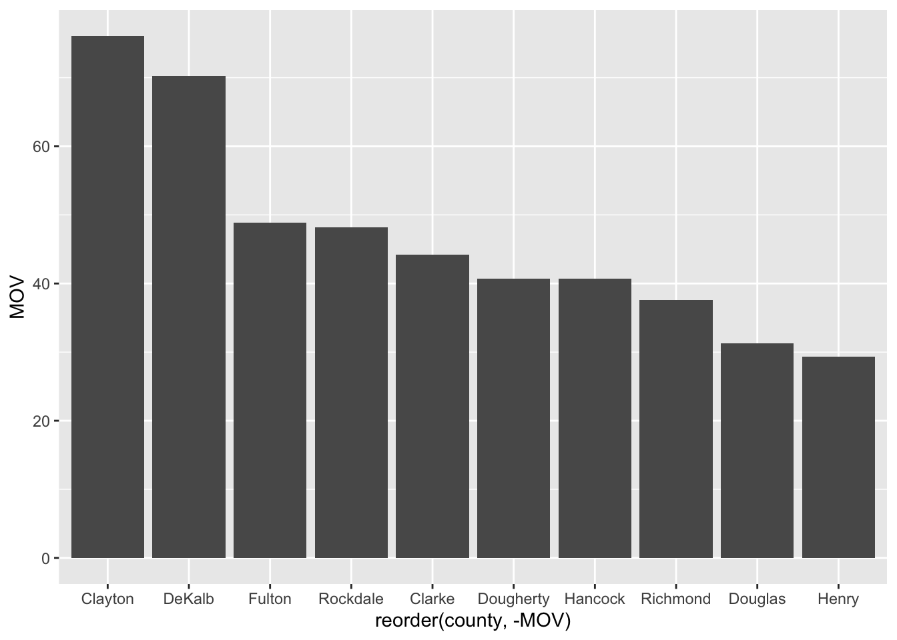
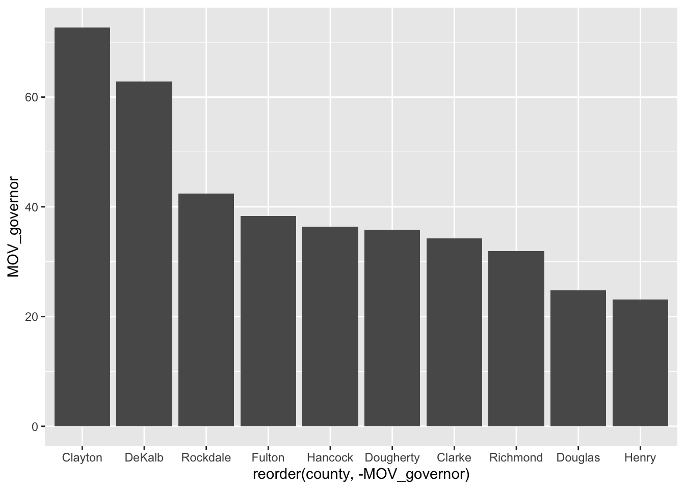
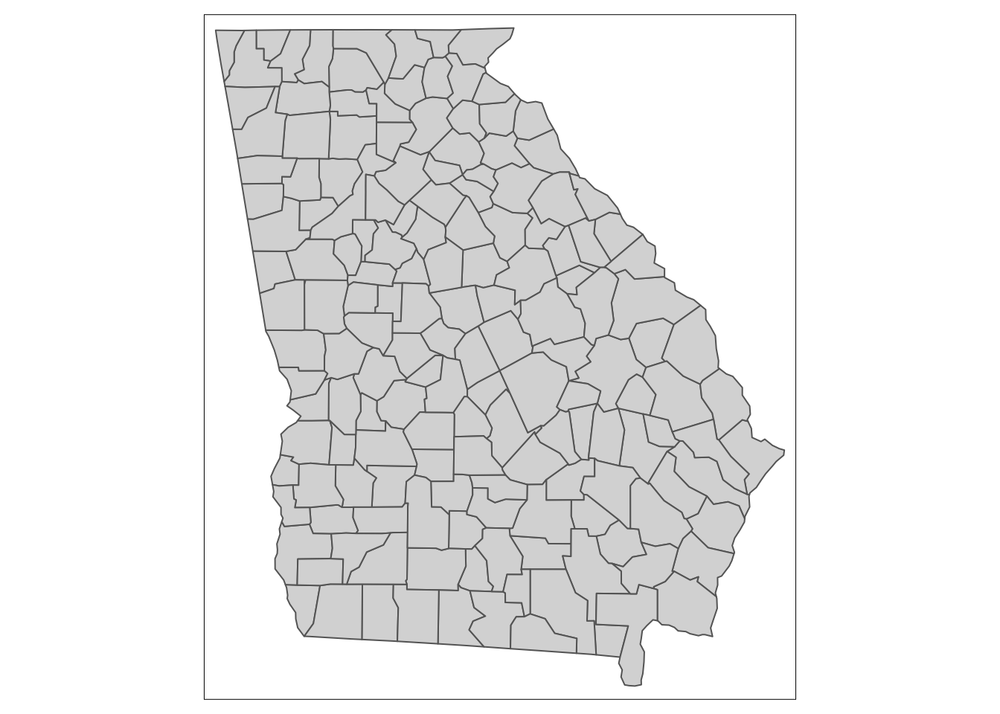
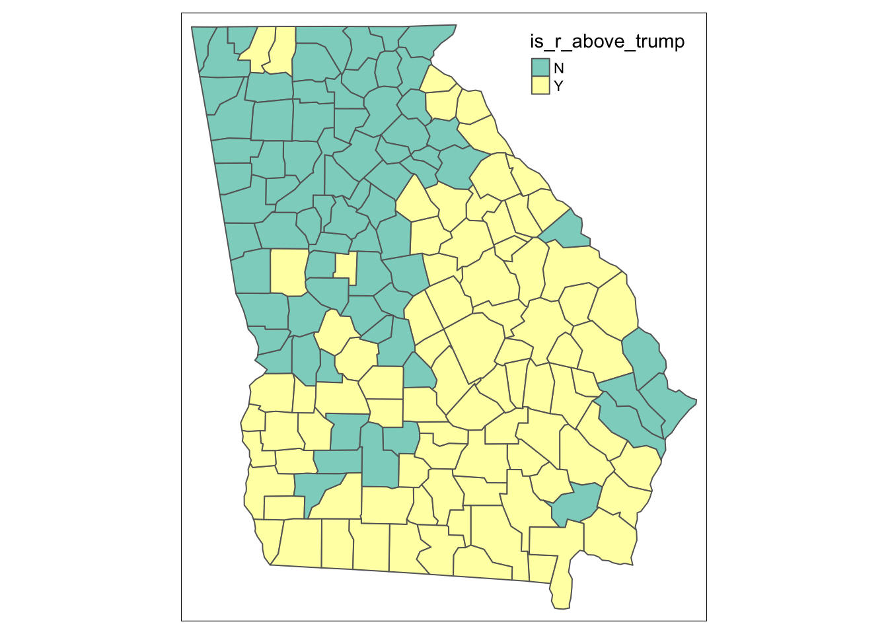
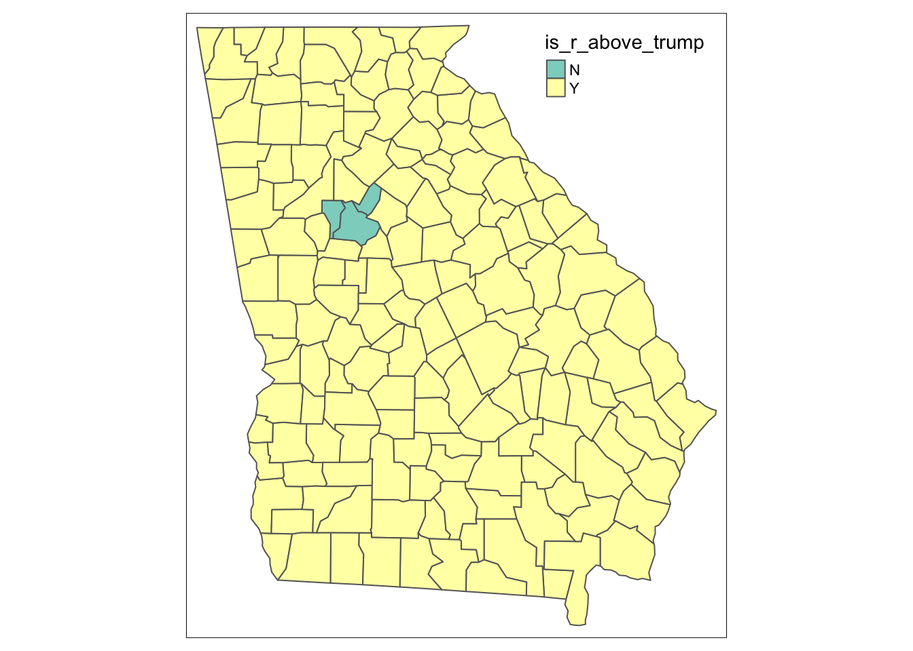
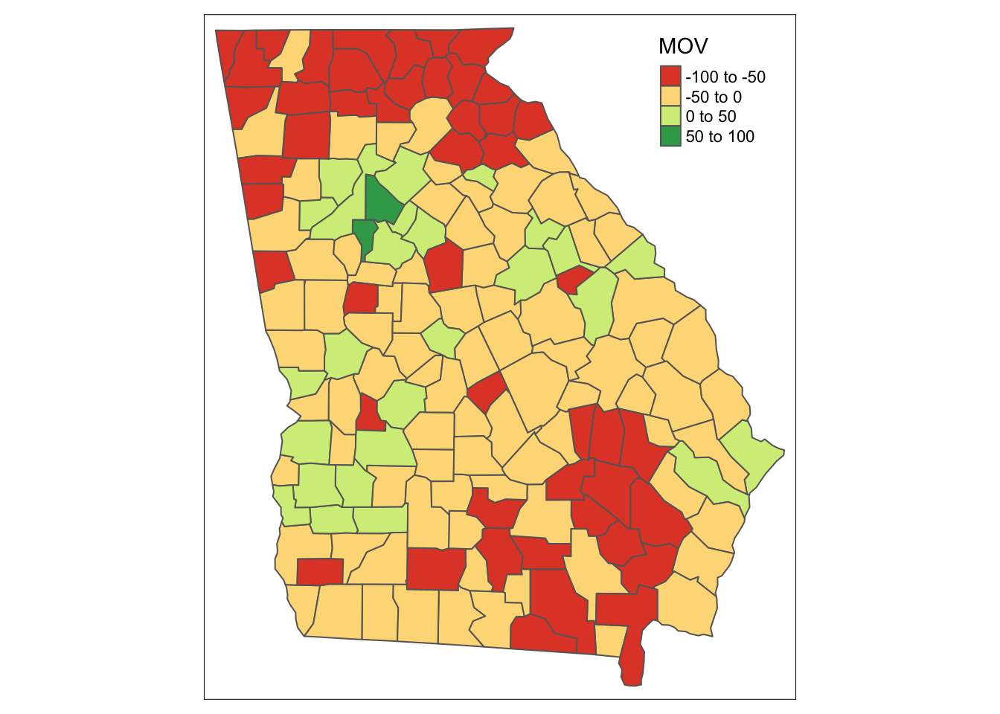
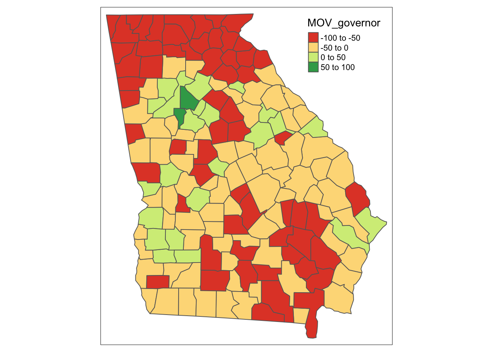

Code
#import the GA election data for this assignment
#GA senate
senate_results <- read_excel(here("ga_votes.xlsx"), sheet = "senate")
#GA governor
governor_results <- read_excel(here("ga_votes.xlsx"), sheet = "governor")We will start by loading our libraries in order to run future lines of code.
Here, I loaded my Georgia votes into my R from the excel spreadsheet by running the code below. First I wanted the code to show the senate results so I pulled only the senate sheet from the excel code. Next I wanted the governor results so I pulled only the governor sheet.
#import the GA election data for this assignment
#GA senate
senate_results <- read_excel(here("ga_votes.xlsx"), sheet = "senate")
#GA governor
governor_results <- read_excel(here("ga_votes.xlsx"), sheet = "governor")Two columns in particular to highlight that we’ll use to examine how the Republican Senate and Governor candidates did compared with former President Trump’s performance in 2020:
pct_r_above_trump. This column calculates the difference in percentage points between what the 2022 Republican candidate got (pct_r_2022) and what Trump got two years earlier (pct_r_2020). A negative value means the candidate did worse than Trump, a positive value means they did better.
is_r_above_trump. This companion columns is a so-called “flag” column, which provides a Yes/No as to whether the Republican candidate did better or worse than Trump. In other words, is the pct_r_above_trump value positive or negative.
Next, I created a column chart that shows how many counties the Republican candidates did better vs. worse than Trump. In doing this I used ggplot to pull the senate results data then wanted the x axis to be the counties and the height of the columns to be the percent above trump of the winning candidate. I then used geomcol to create the bar chart.
ggplot(senate_results, aes(x = county, y = pct_r_above_trump)) +
geom_col()
Now I made one the race for Governor with the same code as above.
ggplot(governor_results, aes(x = county, y = pct_r_above_trump)) +
geom_col()
For the Senate race, I created a chart that shows the top 10 biggest drops between the Republican candidate and Trump.
new_senate_results <- senate_results %>%
arrange(desc(pct_r_above_trump)) %>%
head(10)
ggplot(new_senate_results, aes(x = reorder(county, -pct_r_above_trump), y = pct_r_above_trump)) +
geom_col() 
For the Senate race, I created a chart that shows the top 10 counties highest margins of victory for the Democratic candidate. Note: in order to calulate the margin of victory you will subtract the republican results from the democrat results in 2022.
library(dplyr)
margin_of_victory_data <- senate_results %>%
mutate(MOV = (pct_d_2022 - pct_r_2022))
margin_of_victory_senate <- margin_of_victory_data %>%
arrange(desc(MOV))
top_ten_MOV <- head(margin_of_victory_senate,10)
ggplot(top_ten_MOV, aes(x = reorder(county, -MOV), y = MOV)) +
geom_col()
Here I did the same as the previous code but for the race for governor.
margin_of_victory_data_2 <- governor_results %>%
mutate(MOV_governor = (pct_d_2022 - pct_r_2022))
margin_of_victory_governor <- margin_of_victory_data_2 %>%
arrange(desc(MOV_governor))
top_ten_MOV_gov <- head(margin_of_victory_governor,10)
ggplot(top_ten_MOV_gov, aes(x = reorder(county, -MOV_governor), y = MOV_governor)) +
geom_col()
I used tmap to create maps in this section.
To help start things out for you, we’re going to download a geospatial/map dataset with the county boundaries for Georgia. We’ll use the tigris package to do this.
counties_geo <- tigris::counties(state = "GA", resolution = "20m", cb = TRUE)Retrieving data for the year 2020
|
| | 0%
|
| | 1%
|
|= | 2%
|
|== | 2%
|
|== | 3%
|
|====== | 8%
|
|====== | 9%
|
|======= | 9%
|
|======= | 10%
|
|======= | 11%
|
|======== | 12%
|
|========= | 13%
|
|========== | 14%
|
|=========== | 15%
|
|============ | 17%
|
|============ | 18%
|
|============= | 19%
|
|=============== | 22%
|
|================ | 23%
|
|================= | 24%
|
|================= | 25%
|
|================== | 26%
|
|=================== | 27%
|
|==================== | 28%
|
|===================== | 30%
|
|===================== | 31%
|
|======================= | 33%
|
|======================== | 35%
|
|========================= | 36%
|
|========================== | 37%
|
|=========================== | 38%
|
|=========================== | 39%
|
|============================ | 40%
|
|============================ | 41%
|
|============================= | 42%
|
|============================== | 43%
|
|=============================== | 44%
|
|================================ | 46%
|
|================================= | 47%
|
|================================== | 48%
|
|================================== | 49%
|
|=================================== | 50%
|
|=================================== | 51%
|
|==================================== | 52%
|
|===================================== | 53%
|
|====================================== | 54%
|
|======================================= | 55%
|
|======================================== | 57%
|
|========================================= | 58%
|
|========================================== | 59%
|
|=========================================== | 61%
|
|============================================ | 63%
|
|============================================== | 65%
|
|=============================================== | 67%
|
|================================================ | 69%
|
|================================================= | 70%
|
|================================================== | 72%
|
|=================================================== | 73%
|
|==================================================== | 74%
|
|===================================================== | 76%
|
|======================================================= | 78%
|
|======================================================== | 80%
|
|=========================================================== | 84%
|
|============================================================ | 86%
|
|============================================================== | 88%
|
|=============================================================== | 90%
|
|================================================================= | 93%
|
|================================================================== | 94%
|
|=================================================================== | 96%
|
|===================================================================== | 98%
|
|======================================================================| 100%Now let’s take a look at what we have, by mapping out the polygons of the Georgia counties using the tmap package.
tm_shape(counties_geo) +
tm_polygons()
For the Senate race, I created a choropleth (shaded) map of Georgia counties that shows where the Republican candidate for Senate did better vs. worse than Trump.
senatemap <- inner_join(counties_geo, senate_results, by = c("GEOID" = "fipsCode"))
tmap_mode(mode = "plot")tmap mode set to plottingtm_shape(senatemap) +
tm_polygons("is_r_above_trump", id = "GEOID")
Now I’ve done the same as above but for the governor race.
govmap <- inner_join(counties_geo, governor_results, by = c("GEOID" = "fipsCode"))
tmap_mode(mode = "plot")tmap mode set to plottingtm_shape(govmap) +
tm_polygons("is_r_above_trump", id = "GEOID")
For the Senate race, I created a choropleth map that shows the margins of victory for the Democratic candidate. To do that I needed to compare the Democratic candidate’s percentage (pct_d_2022) with the Republican’s (pct_r_2022) to calculate the margin of victory for each county.
MOVsenmap <- inner_join(counties_geo, margin_of_victory_senate, by = c("GEOID" = "fipsCode"))
tmap_mode(mode = "plot")tmap mode set to plottingtm_shape(MOVsenmap) +
tm_polygons("MOV", id = "GEOID")Variable(s) "MOV" contains positive and negative values, so midpoint is set to 0. Set midpoint = NA to show the full spectrum of the color palette.
Now I did the same as above but this time for the governor race.
MOVgovmap <- inner_join(counties_geo, margin_of_victory_governor, by = c("GEOID" = "fipsCode"))
tmap_mode(mode = "plot")tmap mode set to plottingtm_shape(MOVgovmap) +
tm_polygons("MOV_governor", id = "GEOID")Variable(s) "MOV_governor" contains positive and negative values, so midpoint is set to 0. Set midpoint = NA to show the full spectrum of the color palette.